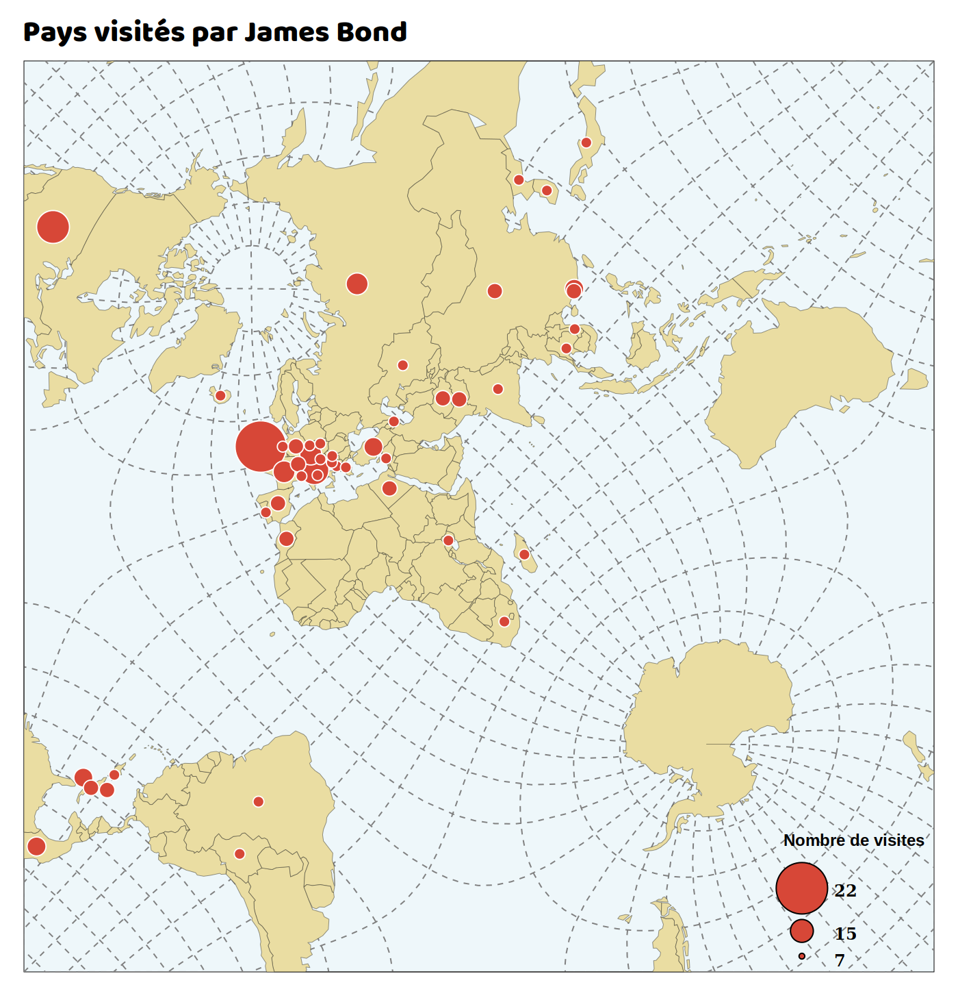
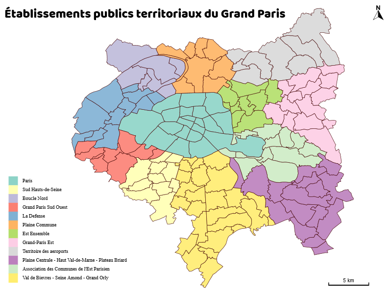
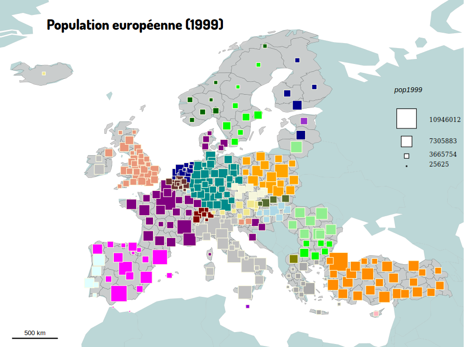

Import et manipulation des données
Deux éléments fondamentaux servent de point de départ à la réalisation d'une carte dans Magrit : le fond de carte et les données qui y sont associées. De larges possibilités sont offertes à l'utilisateur concernant l'ajout de ces deux éléments.
Import du fond de carte
L'import du fond de carte principal peut se faire de différentes manières :
- Par un click sur le bouton 'ajout d'un fond de carte'
 puis par le choix du fichier.
puis par le choix du fichier. - Par un glisser-déposer vers le centre de la carte.
- Par un glisser-déposer vers la section appropriée du menu.
Plusieurs formats sont supportés:
ShapefileGeoJSONTopoJSONkmlgml- Fichier
csvavec colonnes x/y ou geometry
Note: La plupart des formats permettent de spécifier un système de coordonnées de référence; cette indication est ici obligatoire pour ouvrir correctement le fichier. Si aucun système de coordonnées de référence n'est spécifié, l'application considère qu'il s'agit de coordonnées géographiques.
Import d'un tableau de données
L'ajout d'un tableau de données peut être effectué de plusieurs manières :
- Par un glisser-déposer du fichier vers la section appropriée du menu
- Par un clic sur le bouton 'ajout d'un jeu de données'

Plusieurs format sont pris en charge pour l'import des données :
csv(champs séparés par une virgule ou par un point virgule)tsv(champs séparés par une tabulation)xlsetxlsx(à condition que la feuille à utiliser contiennent seulement la table de données).
Jointure des données
Lorsqu'un fond de carte et un jeu de données externes on été ajoutées, il devient possible de les joindre. Cette opération et appelée "jointure" (c'est également le cas dans les logiciels SIG ou dans certaines bases de données) et s'effectue en choisissant la colonne de données....

Apparence de l'élément avant jointure
Apparence de l'élément après jointure des champs
Affichage et enrichissement des tables de données
L'affichage des tableaux de données correspondant à chacune des couches ajoutées (ou obtenues en résultat d'un type de représentation) est possible via le gestionnaire de couche et le bouton représentant une table de donnée.
Projections
De nombreuses projections cartographiques sont disponibles dans l'application.
La séléction d'une projection s'effectue dans la partie suérieure droite de la fenêtre. Le choix d'une projection est accompagné du choix de son centrage.
Celui-ci est par défaut sur la longitude 0°.
La projection appelée "orthographique" présente la particularité d'offrir 3 paramètres de centrage (correspondants aux axes lambda, phi et gamma), permettant une rotation complète et personnalisée du globe.
Plusieurs attributs permettent de distinguer ces projections :
- la conservation locale des surfaces (ces projections sont dites équivalentes, c'est par exemple le cas de la projection azimutale équivalente de Lambert)
- la conservation locale des angles (ces projections conservent les formes et sont dites conformes, c'est par exemple le cas de la projection Mercator)
- la représentation du globe sous une forme interrompue (projection HEALPix et projection de Goode par exemple)
Selon l'échelle d'affichage de la carte et la déformation appliquée par la projection, la présence d'un figuré indiquant le nord peut s'avérer peu ou pas pertinente.
Il est toutefois possible d'ajouter une couche représentant le tracé des lignes de latitude et de longitude (cette couche d'informations est ici appelé "graticule" et est disponible dans la section "ajout d'éléments d'habillage"). Cette couche d'information permet une bonne visualisation des déformations apportées par les différentes projections.
Il est également possible (et conseillé lors de l'utilisation des projections dites "interrompues") d'ajouter une couche d'informations représentant les limites du globe selon le découpage appliqué par la projection.
Note:
- La modification de la projection à utiliser est possible à tout moment
- Lors de la réalisation d'une carte d'une faible emprise spatiale, l'utilisation de certaines projection n'est pas pertinent et est désactivé par défaut.
Exemple d'utilisation des graticules et du fond de l'emprise du globe avec des représentations originales :


Choix de la représentation
Le choix d'un type de représentation est l'élément qui guide le processus de création d'une carte. Ce choix s'effectue en fonction du type des données à représenter (données de stocks, de ratios ou qualitatives) et du type de fond de carte utilisé (points, polygones, etc.).
Représentations adaptées à des données de stocks :
Représentations adaptées à des données de ratios :
Représentations adaptées à des données qualitatives :
D'autres méthodes permettent de créer des représentations originales :
Carte de stocks
Les cartes de stocks permettent de représenter des données de stocks (ou quantitatives absolues). Les données de stocks expriment des quantités concrètes : la somme des modalités des éléments a un sens. Les données de stocks peuvent être représentées par des figurés proportionnels.
Paramètres
- Le champ contenant les valeurs à utiliser.
- La taille (en pixels) à appliquer sur le valeur définie à la suite.
- Le type de symbole à utiliser (cercle ou carré).
- La couleur des symboles. Il est possible de choisir deux couleurs si un seuil est défini.
Exemple :

- Données : Pays du monde
- Champ utilisé : jamesbond
- Symbole : cerle
- Taille fixée à 40px sur la valeur 22
Carte de ratios
Les cartes choroplèthes permettent de représenter des données de ratios par plages de couleurs ou de niveaux de gris. Les données de rapports (de taux, d’intensités ou de ratios) sont des données quantitatives calculées à partir de données de stocks dont ont fait le rapport ou dont on calcule le taux à partir d’un total. Elles expriment les caractéristiques des individus observés mais leur total n'a pas de signification concrète.
Paramètres
- Nom du champ contenant les valeurs à utiliser
- Choix d'une discrétisation adaptée pour la série de valeurs
Un click sur le bouton  ouvre une boite dialogue permettant d'affiner la discrétisation et de choisir la palette de couleur.
ouvre une boite dialogue permettant d'affiner la discrétisation et de choisir la palette de couleur.

Exemple :

Discrétisation
Plusieurs méthodes sont proposées afin de transformer une série continue de valeurs en une série discrète, c'est à dire en un nombre fini de classes. Le nombre de classes ainsi que les valeurs limites de ces classes doivent être justifiées sémantiquement et/ou statistiquement.
Les méthodes proposées par l'outil peuvent être utilisées telles quelles ou bien comme des guides de lecture et d'analyse préalables à la saisie manuelle des limites de classes souhaitées.
- Intervalles égaux Cette méthode, parfois également appelées "amplitudes égale", permet de créer des classes qui possèdent toutes la même étendue.
- Quantiles Cette méthode, parfois également décrite par le terme de "discrétisation en classes d'effectifs égaux" permet de former des classes qui possèdent toutes le même nombre d'individus.
- Q6 Cette méthode originale, notamment démocratisée par l'outil PhilCarto 1, permet d'effectuer une discrétisation selon la méthode des quartiles tout en isolant les valeurs extrèmes.
- Seuils naturels (algorithme de Jenks 2) Cette méthode permet de créer des classes homogènes. En effet l'algorithme vise à trouver le nombre de classe souhaitées en minimisant la variance intra-classe et en maximisant la variance inter-classe.
- Il est également possible d'utiliser les discrétisations en progression arithmétique ou géométrique ou de saisir manuellement les bornes de classes.
Carte qualitative
Ce type de carte permet de représenter des entités surfaciques selon la valeur prise un par un champ dont les valeurs sont regroupées en catégories.
Paramètres
- Nom du champ contenant les valeurs à utiliser
- Choix des couleurs correspondantes aux catégories à représenter
Exemple :

- Champ utilisé : LIBEPT
Carte de stocks et ratios
Ce type de représentation permet de combiner la représentation de données de stocks et celles de ratios sur une même carte.
La donnée de ratiio est représentée à l’intérieur du figuré représentant le stock.
Paramètres
- Le nom du champ contenant les valeurs à utiliser pour définir la taille des symboles.
- La taille (en pixels) à appliquer à la valeur définie à la suite.
- La valeur sur laquelle fixer la taille.
- Le type de symbole à utiliser (cercle ou carré).
- Le nom du champ contenant les valeurs à utiliser (après discrétisation) pour colorer les symboles.
Exemple :

Carte de stocks et qualitative
Ce type de représentation permet d'établir une correspondance entre des données de stock et une variable d'appartenance (variable catégorielle).
Paramètres
- Le nom du champ contenant les valeurs à utiliser pour définir la taille des symboles.
- La taille (en pixels) à appliquer à la valeur définie à la suite.
- La valeur sur laquelle fixer la taille.
- Le type de symbole à utiliser (cercle ou carré).
- Le nom du champ contenant les valeurs à utiliser pour colorer les symboles.
- Le choix des couleurs correspondantes aux catégories à représenter
Exemple :

- Champ utilisé : pop1999
- Symbole carré
- Taille fixée de 22px sur la valeur 1000000
- Champ utilisé pour l'aplat de couleur : Pays
Carroyage
La méthode du carroyage est une méthode permettant d'essayer de s'affranchir de l'arbitraire et de l'irrégularité d'un découpage administratif.
Elle met en évidence les grandes tendances de le répartition spatiale d'une donnée et de traiter des données, en découpant le territoire en « carreaux égaux et repérés » (Les mots de la géographie).
Paramètres
- Nom du champ à utiliser (variable de stock)
- Taille des carreaux en kilomètres
- Forme des carreaux
- Palette de couleurs à utiliser
Exemple :

- Champ utilisé : pop2008
- Carreaux en forme d'hexagone
- Taille de référence : 65km
Cartogramme
Les anamorphoses sont utilisées en cartographie statistique pour montrer l'importance d'un phénomène donné : ce type de carte est couramment appelé un cartogramme.
Elles permettent de déformer les unités territoriales (polygones) sur la base d'un attribut rapporté à la superficie des entités (densité).
Magrit propose deux méthodes de création de cartogrammes : Dougenik et al et Olson (refs).
Paramètres (méthode Dougenik)
- Le nom du champ contenant les valeurs à utiliser
- Le nombre d'itérations à effectuer avant d'obtenir le résultat
- Le nom de la couche produite
Exemple :

- Méthode de Dougenik
- Champ utilisé : pop2008
- 5 itérations
Paramètres (méthode Olson)
- Le nom du champ contenant les valeurs à utiliser
- Le nombre d'itérations à effectuer avant d'obtenir le résultat
- Le nom de la couche produite
Carte lissée
Méthode d'analyse spatiale et de réprésentation basée sur le calcul de potentiels (dit "de Stewart") et qui n’a pas vocation à annuler ou atténuer le bruit (information parasite qui tend à brouiller la lecture) mais s’affranchit complètement du maillage administratif de départ. Elle permet d’observer ainsi la répartition spatiale du phénomène étudié, quelque soit l’hétérogénéité du maillage affecter en tout point de la carte, la valeur de la densité du phénomène dans le voisinage de ce point.
Paramètres
- Le nom du champ contenant les valeurs à utiliser.
- (optionnel) Le nom du champ à utiliser pour calculer un ratio.
- Le span c'est à dire ....
- Le beta, c'est à dire
- La résolution de la grille régulière créer pour l'interpolation
- Le type de fonction d'interaction
- Le nombre de classe souhaité lors de la création des isolignes
- (optionnel) Le nom de la couche de masquage
Exemple :

Carte des discontinuités
Combinée à la représentation par aplats de couleurs (Cf. cartes de ratio), la visualisation de lignes de discontinuités permet de mettre en exergue les ruptures spatiales des phénomènes socio-économiques étudiés, qui selon la formule de Brunet et Dolphus (1990) montre que « l’espace géographique est fondamentalement discontinu ».
Paramètres
- Le champ contenant les valeurs à utiliser.
- Le champ contenant des identifiants uniques permettant d'identifier les tronçons.
- Le type de discontinuités (c'est à dire le rapport entre la valeur des deux entités, parmi 'relatif' ou 'absolu').
- Le nombre de classe à créer.
- La méthode utilisée pour discrétiser les valeurs.
- La couleur utilisée pour représenter les discontinuités.
Exemple de rendu à partir d'un jeu de données d'exemple :

Carte des liens
Ce type de carte représente, avec des lignes d'épaisseur proportionnelle à l'intensité du phénomène, les connexions (flux/liens) existant entre des couples de lieux.
Paramètres
- Le champ contenant les identifiants des entités 'origine'.
- Le champ contenant les identifiants des entités 'destination'.
- Le champ contenant les valeurs de l'intensité du phénomène entre 'i' et 'j'.
- Le type de méthode à utiliser pour discrétiser les valeurs.
- Le nombre de classes à créer lors de l'application de la méthode précédemment définie.
Exemple :

Carte qualitative (pictogrammes)
Ce type de représentation permet de faire figurer des symboles en fonction des valeurs prises par l'attribut de la couche de données.
Paramètres
- Le nom du champ contenant les valeurs à utiliser
- Le choix de pictogrammes correspondants aux différentes catégories à représenter
Exemple :

Habillage de la carte
Magrit propose une série d'éléments nécessaire à l'habillage de la carte :
-
Différentes couches géographiques permettant de contextualiser les données représentées :
- Tracé des pays du monde
- Tracé des limites administratives à différents échellons infra-nationaux (Europe, USA, Brésil)
- Graticule
- Dessin de l'emprise du globe
-
D'autres éléments peuvent être ajoutés, ils sont déplacables au curseur et paramétrables via un clic droit :
- Flèche d'orientation
- Echelle
- Zone de texte
- Ellipse
- Flèche personnalisable
- Symbole
Export
L'outil offre la possibilité d'exporter aussi bien les cartes réalisées que les fichiers géographiques de couche sur lesquels elles reposent. Il est également possible, afin de partager son travail avec un collègue ou afin de le continuer plus tard, de sauvegarder l'état du projet en cours.
Export au format SVG
Grâce à cette méthode il est possible d'exporter le rendu actuel selon les spécifications SVG 1.2.
Note:
- Les spécifications SVG ne sont pas implémentées de manière strictement similaire selon les outils de visualisation et d'édition.
- Les exports SVG fournis par l'application visent en priorité l'affichage de l'image par un navigateur web et/ou son édition par un outil comme Inkscape, Adobe Illustrator ou SVGEdit.
- Des fonctionnalités fournissant des exports optimisés sont proposées, pour Inkscape d'une part et pour Adobe Illustrator d'autre part.
Export au format PNG
Cette méthde permet d'exporter la carte dans un format dit "matriciel" ou "raster", c'est à dire composé de pixels.
La résolution de ce type de fichier est fixe.
Ainsi dans Magrit il est proposé de choisir la résolution du fichier à exporter en fonction de son futur usage (affichage écran, impression petit ou grand format, etc.).
Export d'un fichier de couche géographique
Cette fonctionnalité n'est disponible que pour pour les types de représentation ayant généré un nouveau fichier géographique. C'est le cas des méthodes suivantes : carroyages, cartogramme (selon la méthode d'Olson et selon la méthode de Dougenik), cartes lissées, carte de liens et carte de discontinuités. Les formats proposés à l'export sont les mêmes que ceux acceptés lors de l'import :
- GeoJSON
- TopoJSON
- Shapefile
- Kml
- Gml
Différents systèmes de projection sont proposés par défaut lors de l'export mais il est possible de choisir tout type de système de référence supporté par le projet Proj.4.
Sauvegarde du projet en cours
Cette fonctionnalité permet de sauvegarder l'état d'une session et de l'exporter au format JSON. Le fichier "projet" ainsi exporté pourra être ouvert à nouveau, depuis n'importe qu'elle poste d'ordinateur, et permet de continuer la session de travail. Cette fonctionnalité de sauvegarde du projet est activée automatiquement lorsque l'utilisateur quitte la page; la session est alors sauvegardée localement dans le navigateur pour une éventuelle reprise ultérieure.
# Jeux de données
- Localisations des hôpitaux de Paris (points)
- Communes de la métropole du Grand-Paris (polygones) :
- geométrie; communes du Grand-Paris; Institut national de l’information géographique et forestière (IGN), GEOFLA® 2015 v2.1 Communes France Métropolitaine
- DEPCOM; code communal; INSEE 2016
- LIBCOM; nom de la commune; INSEE 2016
- EPT; code le l'Etablissement Public Territorial; Atelier parisien d'urbanisme 2016
- LIBEPT; nom de l'Etablissement Public Territorial; Atelier parisien d'urbanisme 2016
- DEP; code du département; INSEE 2016
- INC; somme des revenus déclarés par les ménages; Direction générale des finances publiques, impôts de 2014 sur les revenus de 2013.
- TH; nombre de ménages fiscaux; Direction générale des finances publiques, impôts de 2014 sur les revenus de 2013.
Contributeurs
Matthieu Viry : Développement & Conception
Timothée Giraud & Nicolas Lambert : Conception